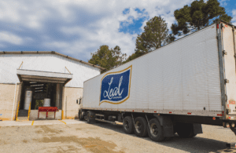
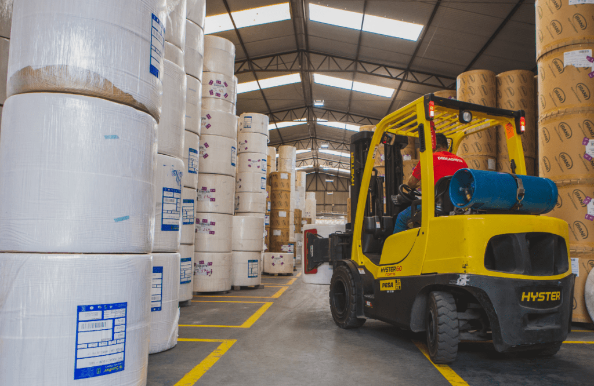

É com grande entusiasmo que compartilhamos mais um incrível caso de sucesso, desta vez protagonizado pela Leal Embalagens e homologado pela gigante da tecnologia, Google. A partir de agora
a Leal Embalagens faz parte de um seleto grupo de empresas que, comprovadamente, experienciaram uma verdadeira revolução digital por meio do Google Workspace. Vamos, destacar como essa implementação não representa apenas uma mudança tecnológica, mas sim uma transformação que impulsionou a produtividade e a inovação. Além disso, abordaremos a importância da expertise e suporte contínuo fornecidos pela Guinux para garantir a sustentação e gerenciamento do ambiente tecnológico da Leal Embalagens.
Transformando Digitalmente com o Google Workspace:
A decisão de implementar o Google Workspace na Leal Embalagens não foi apenas uma escolha tecnológica, mas sim um passo crucial em direção à transformação digital. Essa solução do Google Cloud não se limita a substituir ferramentas de escritório tradicionais; ela redefine a forma como as empresas operam, colaboram e inovam.
“A implementação do Google Workspace não
é apenas uma mudança tecnológica, mas uma transformação
que impulsionou a produtividade e a inovação”
Anna Cristina Berberi Ambos – Gerente Geral
Com o Google Workspace, a Leal Embalagens experimentou uma melhoria significativa na

produtividade de seus colaboradores. A colaboração em equipe tornou-se mais eficiente, com ferramentas como o Gmail, Google Chat, Docs permitindo a criação e edição simultânea de documentos em tempo real, comunicação de forma assíncrona, fácil acesso aos arquivos da empresa através do Google Drive, e claro as inovações e todas facilidades do Gmail.
A Importância do Suporte Contínuo da Guinux:
Para garantir que a transformação digital através do Google Workspace fosse bem-sucedida e sustentável, a Leal Embalagens contou com a parceria estratégica da Guinux. A expertise e suporte contínuo fornecidos

pela Guinux desempenharam um papel fundamental na implementação bem-sucedida do Google Workspace e no gerenciamento eficiente do ambiente tecnológico da empresa.A equipe da Guinux não apenas ajudou na configuração inicial e migração de 100% dos dados para o Google Workspace, mas também forneceu suporte técnico contínuo e implementou as melhores práticas de segurança digital. Isso garantiu que a empresa aproveitasse ao máximo as funcionalidades do Google Workspace e mantivesse a segurança dos dados em um nível superior.
Confira o PDF oficial do Caso de Sucesso através deste link
(https://cloud.google.com/find-a-partner/partner/guinux?redirect=)
Conclusão:
O caso de sucesso da Leal Embalagens com o Google Workspace é uma história inspiradora de como a transformação digital pode impulsionar a produtividade e a inovação em uma empresa. A parceria com a Guinux foi fundamental para garantir que essa transformação fosse bem-sucedida e sustentável.
O papel da Guinux é buscar aumento de produtividade com o Workspace e garantir que todos os sistemas e infraestrutura tecnológica estejam funcionando de forma eficiente e segura.
Se você também está considerando a implementação do Google Workspace em sua empresa e deseja experimentar os benefícios da transformação digital, a Leal Embalagens é um exemplo notável a ser seguido. Aproveite as lições aprendidas com esse caso de sucesso e conte com a expertise da Guinux para ajudá-lo em sua jornada rumo à excelência digital.